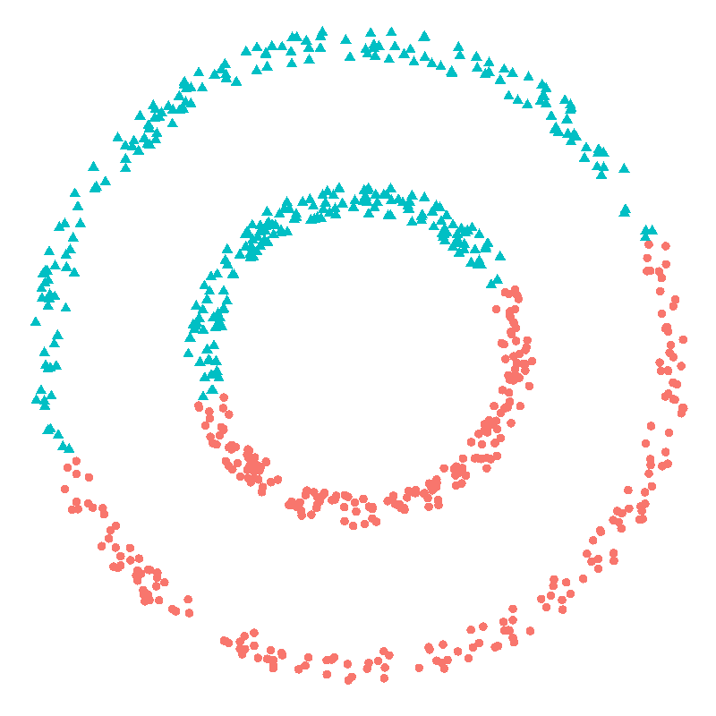

Clustering¶
Clustering is a way to describe unlabeled by putting objects into groups or clusters.
Single-Link Clustering (SLC)¶
SLC is a type of hierarchical agglomerative clustering, similar to a spanning tree.
Steps:
1. Each datapoint is assigned to its own cluster.
2. At each set, merges the two clusters whose closest pair of points have the smallest distance.
3. Stop when k clusters have formed.
Forms elongated chain-like clusters. Can handle non-spherical shapes but is sensitive to noise and outliers.
K-Means Clustering¶
- K-Means is an unsupervised learning algorithm for partitioning data into K clusters.
- Each cluster is defined by its centroid (mean of the points in the cluster).
- The algorithm minimizes the within-cluster sum of squared distances:
\( \sum_{i=1}^K \sum_{x \in C_i} | x - \mu_i |^2 \)
Steps:
1. Initialize K centroids (randomly or with heuristics like K-Means++).
2. Assign each point to the nearest centroid.
3. Update centroids as the mean of assigned points.
4. Repeat steps 2–3 until convergence (no changes or small error).
- Sensitive to initial centroids and may converge to local minima.
-
Works best with spherical, equally sized clusters.
-
Doesn’t model probability or handle overlapping clusters well.

Expectation-Maximization (EM)¶
- EM is a probabilistic algorithm for maximum likelihood estimation with latent variables.
- Commonly used for Gaussian Mixture Models (GMM).
- Assumes each data point was generated by a hidden distribution (e.g., one of several Gaussians).
Steps:
1. E-step: Compute the expected responsibility of each component for each point.
2. M-step: Update parameters (e.g., means, covariances, mixing weights) to maximize expected likelihood.
- Iterates E and M steps until convergence.
- Models soft assignments (fractional membership in clusters).
- Can model elliptical, overlapping clusters.
- More flexible than K-Means, but computationally heavier.
- Objective: maximize the log-likelihood of the data under the model.
| Algorithm | Runtime (Typical) | Best For |
|---|---|---|
| Single-Link Clustering | \( \mathcal{O}(n^2 \log n) \) or \( \mathcal{O}(n^3) \) | Finding non-spherical, chain-like clusters; dendrogram-based analysis |
| K-Means | \( \mathcal{O}(nkdT) \) | Fast clustering of spherical, well-separated clusters in large datasets |
| EM (e.g., for GMM) | \( \mathcal{O}(nkd^2T) \) | Soft clustering; modeling overlapping, elliptical clusters with uncertainty |